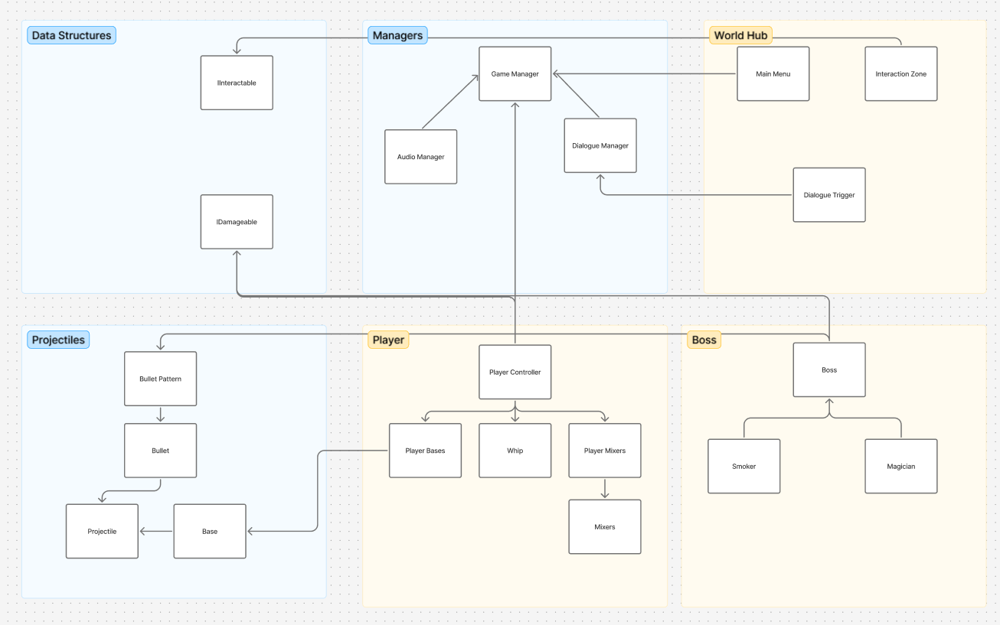
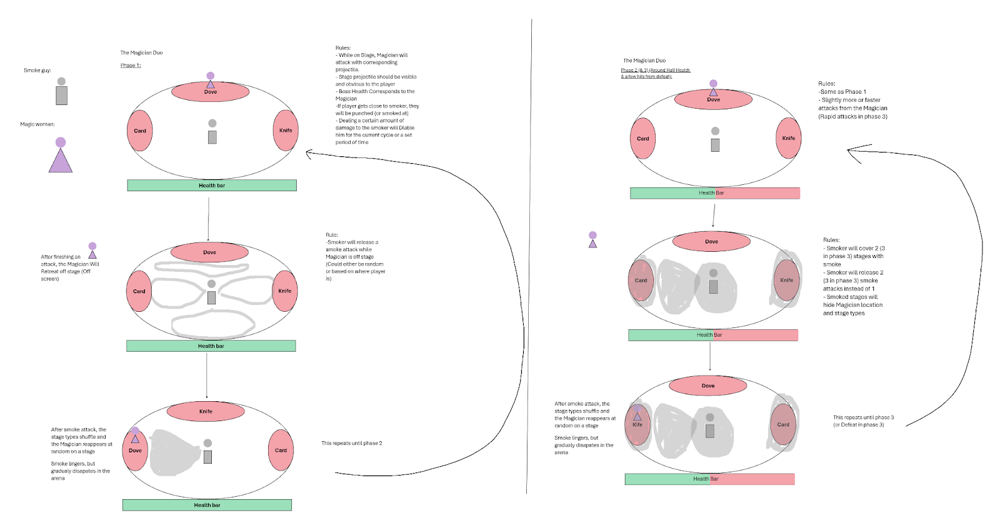
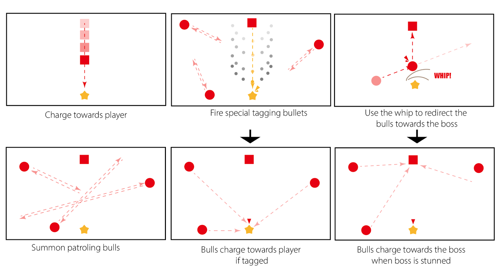
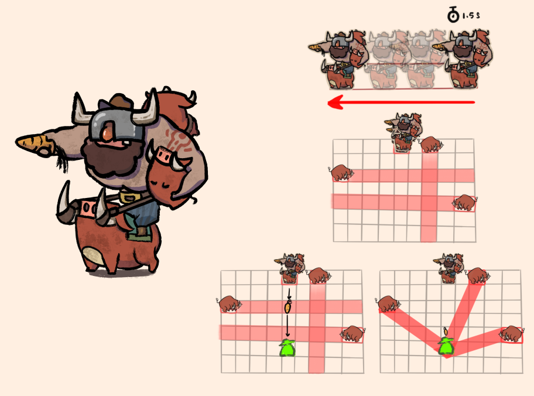
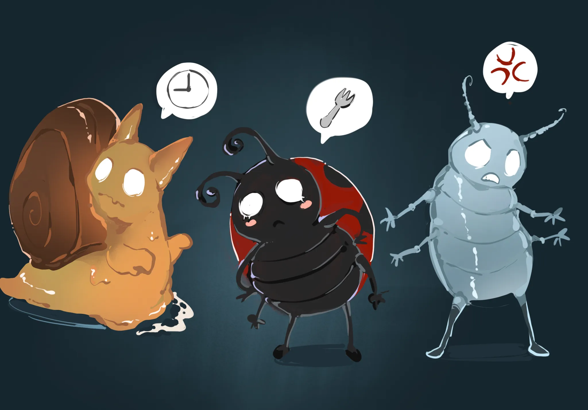
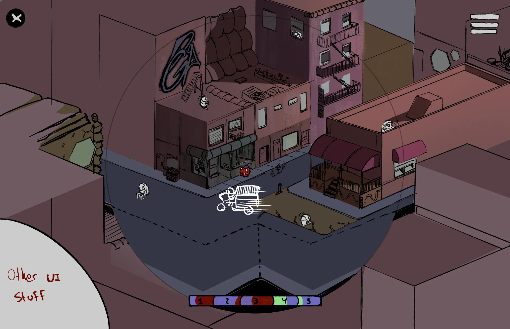
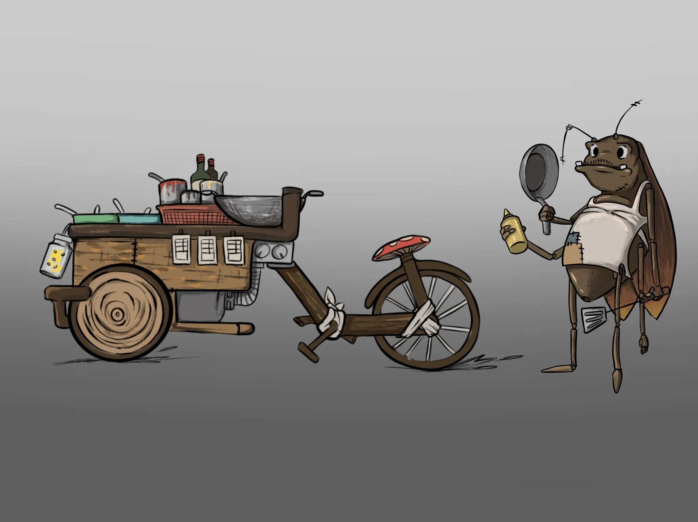
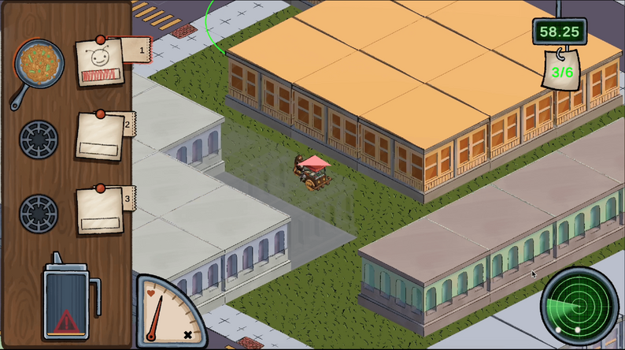

Brief Overview
Our game is a Bullet Hell / Action-Adventure set in the Wild West. In this world, saloons are the lifeblood of every community—until that freedom comes under threat. The antagonist, “The Granny,” is a ruthless 72-year-old business tycoon expanding her bar empire through sabotage and exploitation. Duke, a 26-year-old bartender, has watched neighboring saloons fall one by one, and now Granny has set her sights on his family’s bar. To protect his community, Duke must take on her network of enforcers and expose the truth behind her corrupt capitalist machine.
Project Management & Development Process
Team Structure & Management
As Project Lead, I organized the team of programmers, artists, audio designers, and writers into three specialized units:
Player Team
- Combat System
- Player Movement
- Player Design
- Player Loadout
Arena Team
- Boss Design
- Boss Battle Mechanics
- Level Design
- Boss AI
Narrative Team
- Story Development
- Boss/Player Narrative
- World Hub
- In Game Dialogue
Development Timeline & Milestones
Initial Concept
Gameplay Prototype
Technical Prototype
Alpha Release
Golden Master
Initial Concept Phase
Led team through concept pitches and core game definition:
A western bullet hell game where players defend their saloon from a corrupt business tycoon by challenging her network of enforcers in intense boss battles.
Digital Prototype Phase
Architecture Specification

Some Boss Designs..
Magician Boss

Bull Boss


Project Management Tools
- Figma - Architecture & Design Specs
- Jira/Trello - Agile Task Management
- Git - Source Control
Concept Art & Visual Development
Our art team developed a distinctive visual style that blends urban environments with insect-inspired elements, creating a unique world for Cook Roach's adventures.



Visual Development Pipeline
- Initial sketches and mood boards
- Style exploration and color studies
- Final asset creation
- 3D model implementation
My Contributions
Project Management Contributions
- Structured the team into programming, art, and sound units
- Led sprint planning and managed tasks in Jira
- Facilitated stand-ups, milestone reviews, and conflict resolution
- Delivered Golden Master on time; Showcased to 1000+ people at Syracuse Makerfaire
Design Contributions
- Designed in-game camera system
- Led prototyping and playtesting (digital & non-digital)
- Iterated on gameplay based on player feedback and testing results
Technical Contributions
- Programmed core visual system in Unity (C#)
- Built internal tools for asset integration and debugging

Reflection
As a PM: I learned how to keep a diverse team aligned and motivated, and how to
adapt Agile practices for a student game project.
As a designer/programmer: I deepened my skills in rapid prototyping, player
feedback integration, and building scalable Unity systems.